Markaminner
Markaminner
Prospektkort, bilder og andre artige objekter fra Oslomarka. Et lite minnegalleri med 106 gjenstander, fra fotografier fra 1878 til en flaskebrikke fra 1972.

Fotografi · 1878
Frognersæteren
Fotografiske Atelier. P.A. Thorén
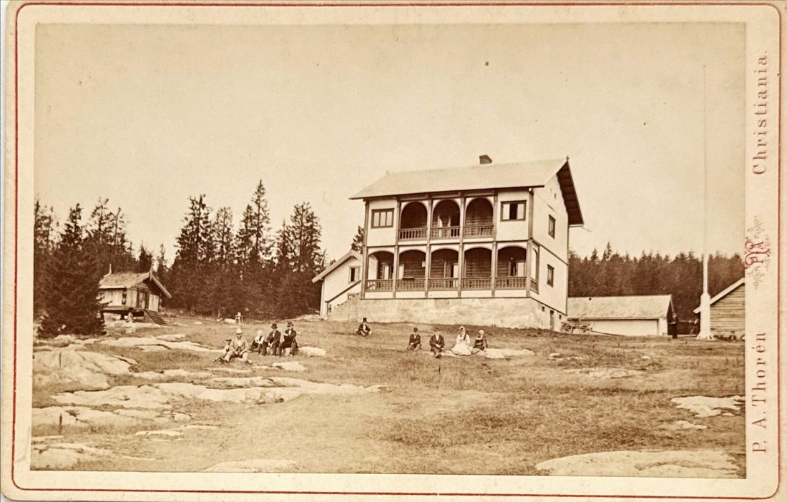
Fotografi · 1878
Frognersæteren
Fotografiske Atelier. P.A. Thorén

Fotografi · 1878
Frognersæteren
Fotografiske Atelier. P.A. Thorén

Fotografi · 1878
Øvre Frognersæteren
Fotografiske Atelier. P.A. Thorén

Program · 1883
Præmie-Skirendet
Foreningen til Ski-Idrættens Fremme
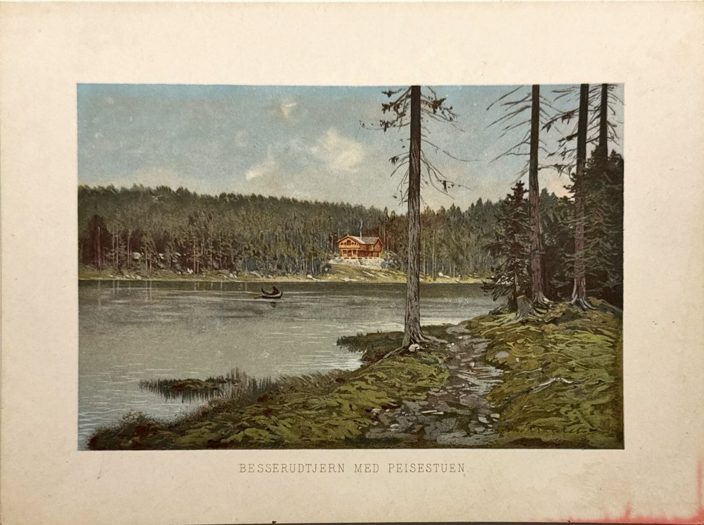
Billedmappe · 1885
Besserudtjern med Peisestuen
H. Abels Kunstforlag Chr.
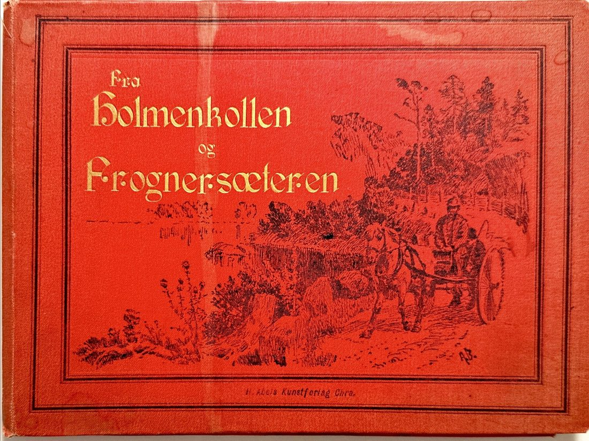
Billedmappe · 1885Fra Holmenkollen og
Fra Holmenkollen og
Frognersæteren (mappen)
H. Abels Kunstforlag Chr.
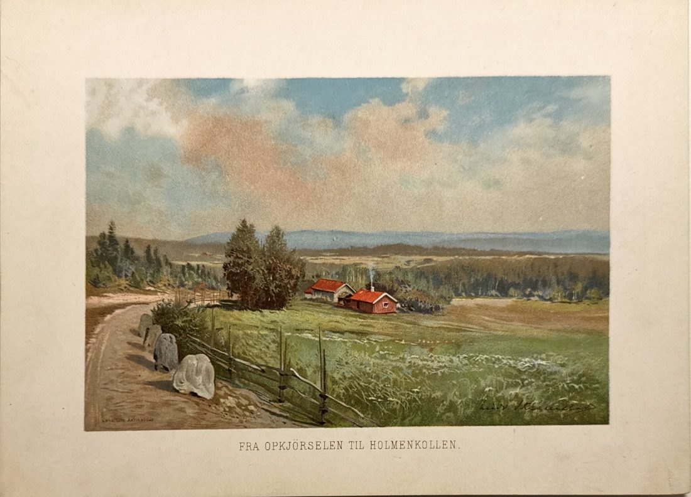
Billedmappe · 1885
Fra opkjörselen til Holmenkollen
H. Abels Kunstforlag Chr.
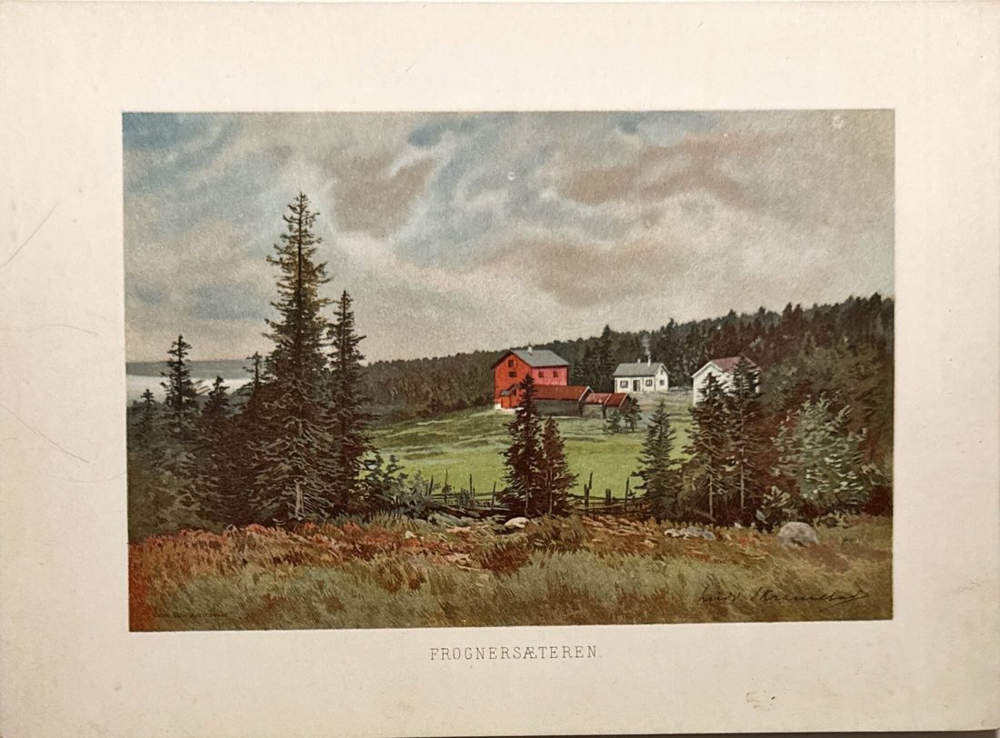
Billedmappe · 1885
Frognersæteren
H. Abels Kunstforlag Chr.
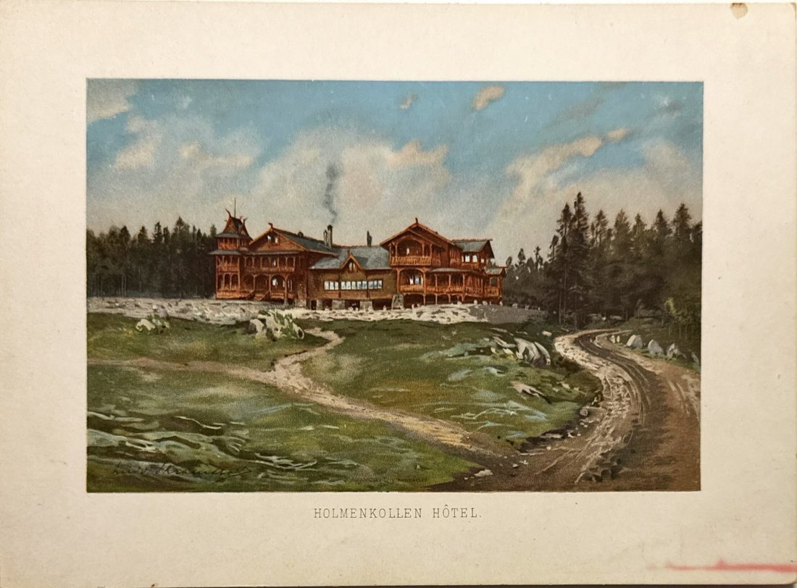
Billedmappe · 1885
Holmenkollen Hôtel
H. Abels Kunstforlag Chr.

Billedmappe · 1885
Parti fra Besserudtjern
H. Abels Kunstforlag Chr.

Billedmappe · 1885
Parti fra Keiser Wilhelms vei
H. Abels Kunstforlag Chr.
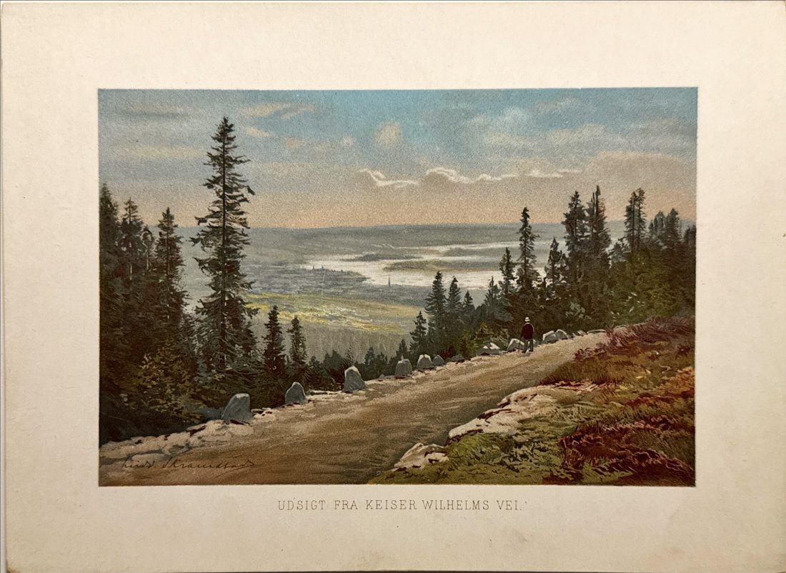
Billedmappe · 1885
Udsigt fra Keiser Wilhelms vei
H. Abels Kunstforlag Chr.

Billedmappe · 1885
Udsigtstaarnet paa Holmenaasen
H. Abels Kunstforlag Chr.

Billedmappe · 1885
Ved Heftys Bautasten
H. Abels Kunstforlag Chr.
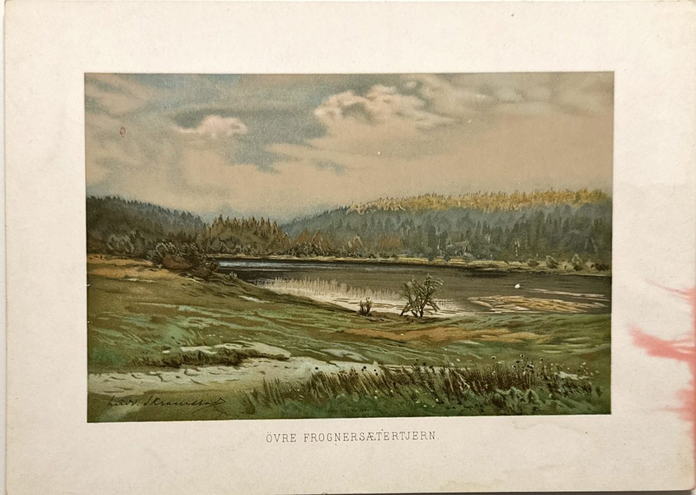
Billedmappe · 1885Øvre
Øvre
Frognersætertjern
H. Abels Kunstforlag Chr.

Deltakere · 1886
Fortegnelse over Deltagere. Præmie-Skirendet ved Huseby
Foreningen til Ski-Idrættens Fremme

Deltakere · 1888
Præmierendende 1888
Foreningen til Ski-Idrættens Fremme

Lover · 1892
Love for «Vækkerø Skiklub»
Vækkerøe Skiklub
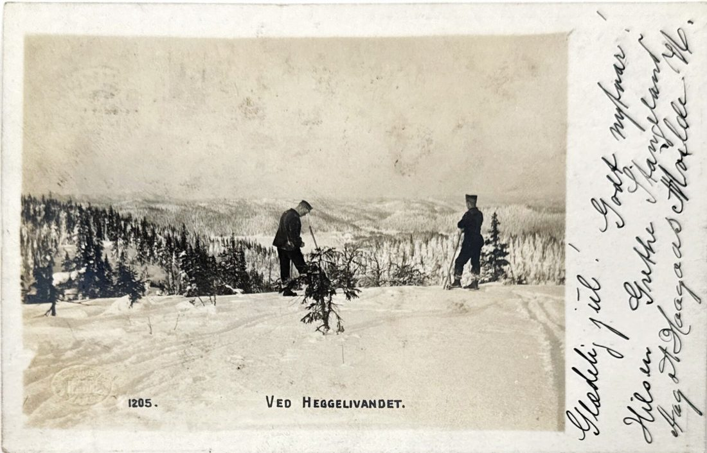
Prospektkort · 1905
Ved Heggelivandet
H. Abels Reproduksjonsanstalt
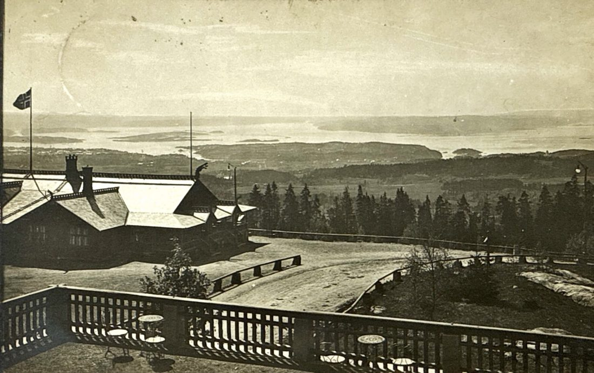
Prospektkort · 1906
Utsikt fra Holmenkollen
Norsk Kunst
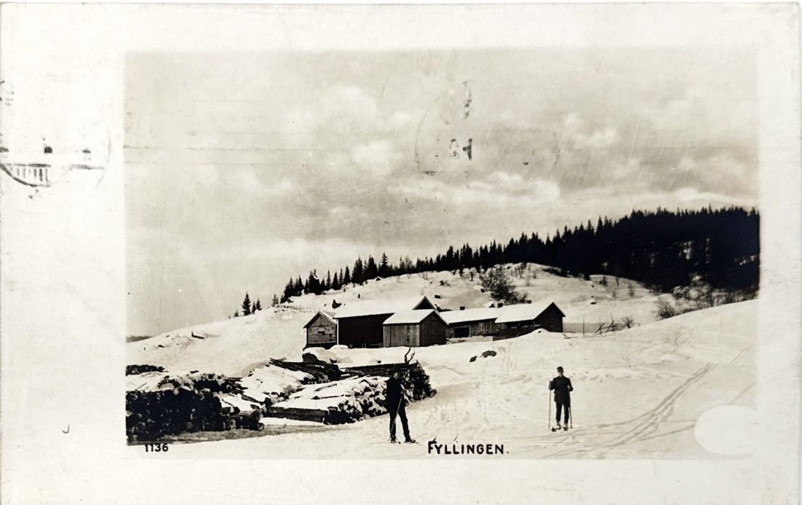
Prospektkort · 1907
Fyllingen
H. Abels Reproduksjonsanstalt
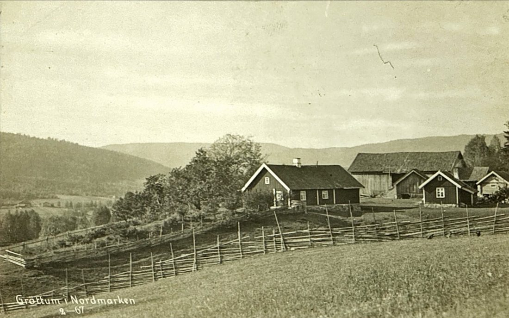
Prospektkort · 1907
Grøttum
Kunstforlaget National
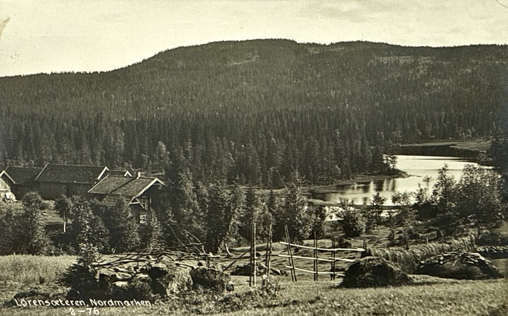
Prospektkort · 1907
Lörensæteren
Viser 24 av 106